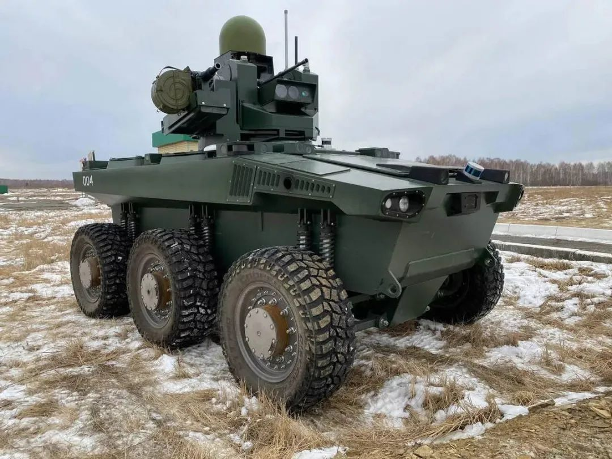
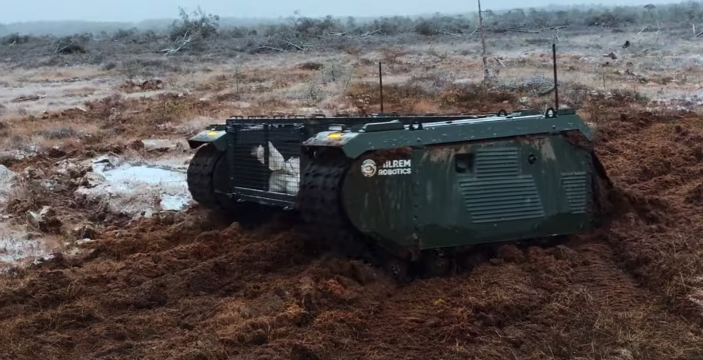
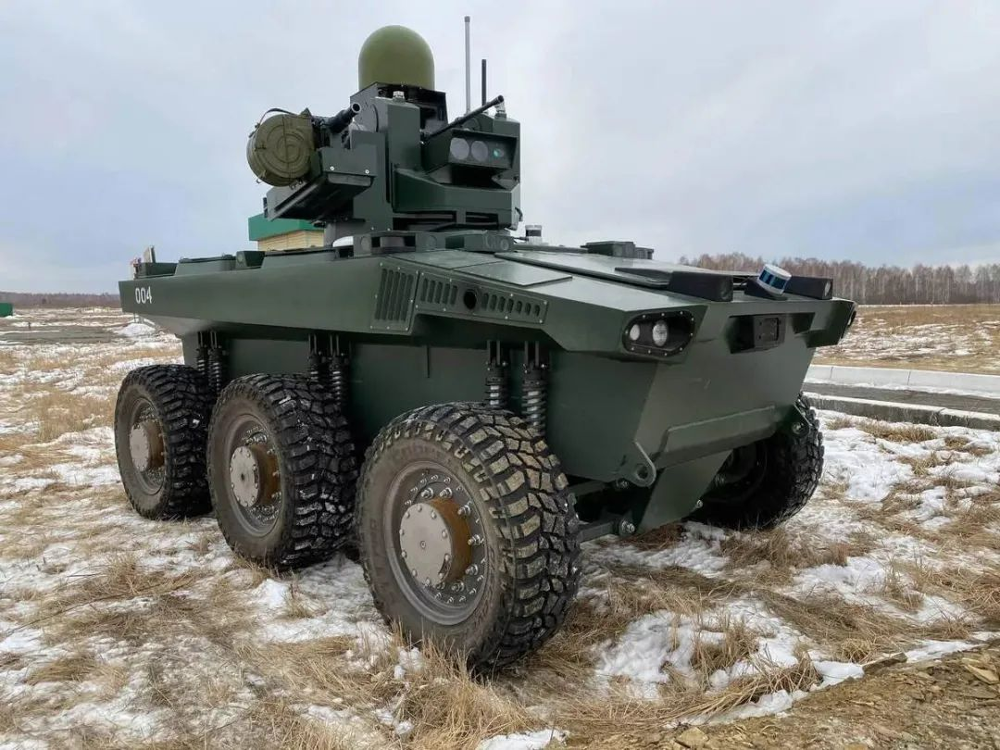
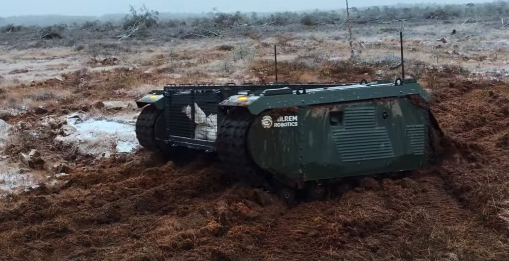
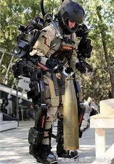

In many famous movie, we can see AI solider, they are strong, smart. Like in the movie "Wandering Earth II" there are automated drones and "door frame" robot.
Morden days' technologies can support the use of automated robot, there can be various usage: 1.Transportation 2. Supervision 3. Replace front- line soliders.
 

The robot can also support the solider, make them stronger, faster, etc.
